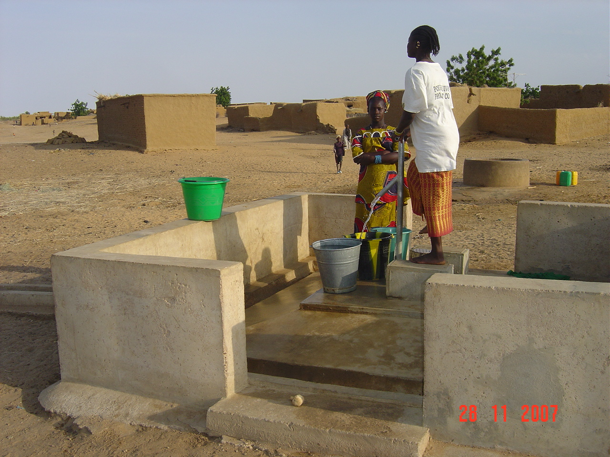

Projects
Explore the impactful initiatives undertaken by NIDIS, where each project represents a steadfast commitment to improving lives and supporting sustainable development across the Sahel region. From enhancing water accessibility to fostering agricultural growth, discover how our projects are making a tangible difference in the communities we serve.

Water Project

Agriculture Project

Refugee Project

Workshops and Training